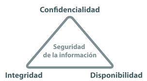

<!DOCTYPE htlm>
<httml>
	<head>

		  <link rel="stylesheet" type = "text/css/" href="css/normalize.css">
		  <link rel="stylesheet" type = "text/css/" href="css/style.css">

		  <title> SEGURIDAD INFORMATICA </title>


      <nav>
      <ul>
        <li>
          <a href="index.html">INICIOOOO</a>
        </li>
        <li>
          <a href="lecturas.html">LECTURAS</a>
        </li>
        <li>
          <a href="#">MULTIMEDIA</a>
        </li>
        <li>
          <a href="#">ACTIVIDADES</a>
        </li>
        <li>
          <a href="#">AUTORES</a>
        </li>
      </ul>
      <!--ul>li*5>a[#]-->
    </nav>

 <STYLE type="text/css">
      H1 { text-align: center}
 </STYLE>


<body style="background-color:#33FFF9;">
      <br>
          <H1> Elementos de la seguridad informática </H1>
      <br>
<h3 align="center"><border="1px" ALIGN="center" style="background-color:#FBF5EF"> 
      
      <tr>
              <td>Integridad</td>
              <td>Disponibilidad</td>
              <td>Control</td>
              <td>Autenticidad</td>
      </tr>
</h3>
  </head>
		

<header>
      <br>
        <u><h2 ALIGN="center">Seguridad informática</h2></u>
        
     		<figure>

        <figcaption>
        		 	

        </figcaption>
</header>

        
  <h3 align="center"> Este  ovi  sobre seguridad  informática  va  dirigido  a  estudiantes    o   demás 
        personas que estén interesados en saber más de la  seguridad informática y sus 
        elementos  como  son  la  integrad,disponibilidad,privacidad,control  y  autenticidad 
        de  la  informática    .presenta  una   introducción,  profundización  e  información 
        complementaria sobre los elementos de este tema y maneras de protegerse de 
        Universidad Nacional Abierta y a Distancia – UNAD -  Vicerrectoría Académica y de Investigación - VIACI
        Escuela: Ciencias Básicas Tecnología e Ingeniería Programa: Ingeniería de Sistemas 
        Curso: Diseños de Sitios Web Código: 301122
        inseguridades en la informática como son los antivirus y colocar muy buenas 
        contraseñas que sean difíciles de copiar entre otros
          


  </h3>
  <section>
    
  </section>


	</body>
	</html>